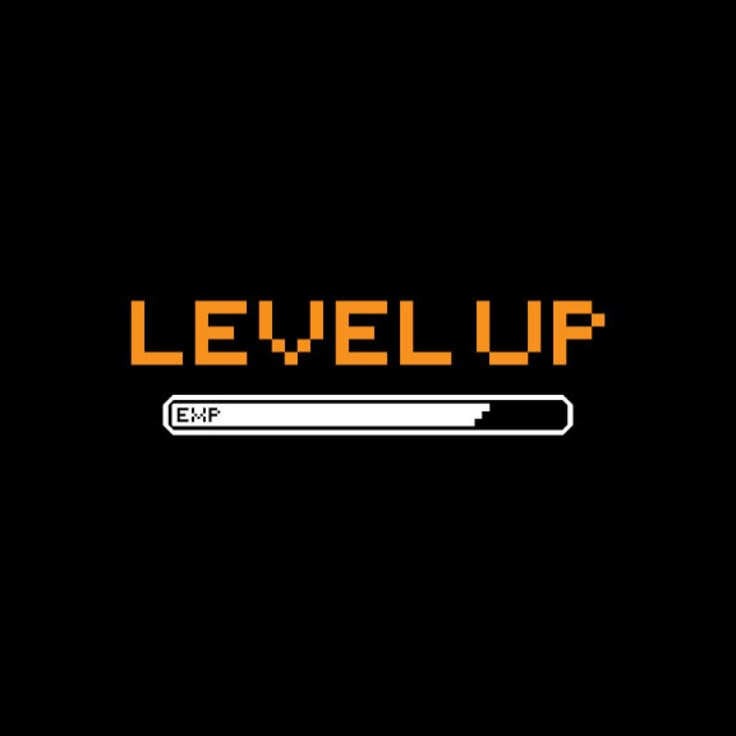

CONSEJO 1
Aprende a perder con estilo. No importa si juegas competitivo o casual: cada derrota trae información valiosa. Analiza qué hiciste mal, observa a tus rivales y guarda la calma. Convertir la frustración en aprendizaje es lo que realmente te hace mejorar.
